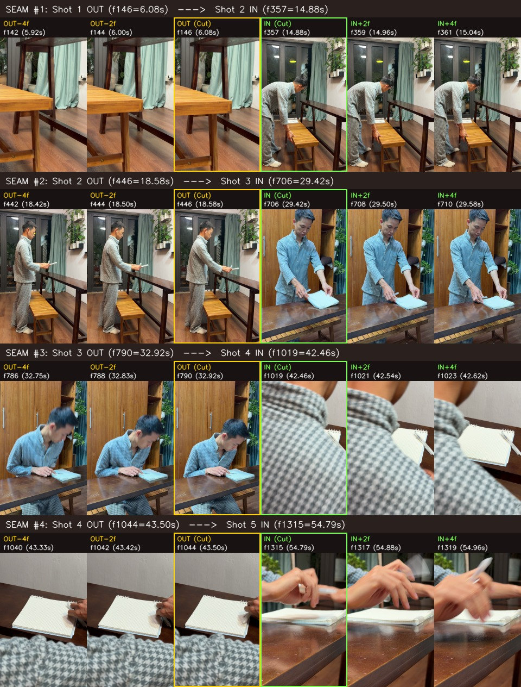
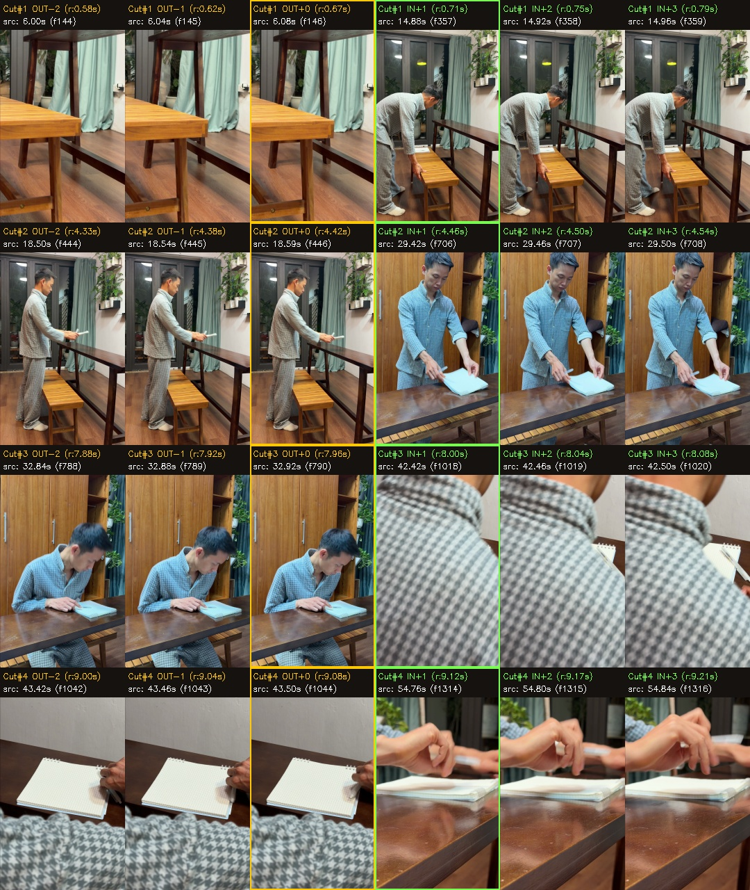

Chuỗi 5 Cỡ Cảnh Bàn Làm Việc Gỗ (`s1.MOV` → `s1_coa_v4.mp4`)
Hành trình nối 4 nhịp liên hoàn: Kéo ghế bước vào → Ngồi xuống ghế → Mở sổ tay → Viết sổ → Đọc & lật sổ
File quay gốc gồm 5 lần bấm máy đổi góc. Mỗi take đều chứa 2 hành động liên tiếp (VD: Take 1 vừa kéo ghế vừa ngồi xuống; Take 2 bóng lưng đi ngang che ống kính rồi mới kéo ghế và ngồi xuống).
Bản mẫu anh Việt tự cắt tay: tách chính xác từng nhịp hành động để nối Cảnh 1→2 bằng hành động kéo ghế, Cảnh 2→3 bằng hành động ngồi xuống, Cảnh 3→4 bằng hành động mở sổ, Cảnh 4→5 bằng hành động viết/đọc sổ.
Lỗi khi chưa nâng cấp COA V4.0: thuật toán V3 chỉ chấm điểm năng lượng trên cửa sổ trượt toàn take nên lấy cả đoạn đứng chờ đầu cảnh và không tách được nhịp kéo ghế khỏi nhịp ngồi xuống.
Áp dụng quy tắc COA V4.0 (Tách Sub-Strokes + Ghép cặp cùng `action_id`): khớp tuyệt đối `0 frame` ở toàn bộ Shot 1..3 và chỉ lệch `1 frame` ở Shot 4 (`MAE = 0.70 frames` trên 10 mốc IN/OUT). Đã vượt qua bài kiểm tra dịch `-7 frames` của Thư ký 1.
📊 Bảng Giải Phẫu Điểm Cắt & Bàn Giao Hành Động (`s1_coa_v4.mp4` vs `s1- vietlam.mp4`)
| Shot | Cỡ cảnh | Frame Nguồn (COA V4) | Frame Mẫu (Anh Việt) | Sai số | Chuỗi Sub-Stroke & Hành Động Bàn Giao (`OUT → IN`) |
|---|---|---|---|---|---|
| S01 | Trung (MS) | f044 → f073 |
f044 → f073 |
0f / 0f | Bỏ 44f chờ đầu cảnh; vào ngay lúc tay nắm lưng ghế kéo ra (PULL_CHAIR) → cắt OUT giữa đà kéo ghế tại f073 (bỏ hoàn toàn phần ngồi xuống ở cuối Take 1). |
| S02 | Rộng (WS) | f185 → f268 |
f185 → f268 |
0f / 0f | Vừa thoát bóng lưng che ống kính tại f185 → đón tiếp đà kéo ghế (PULL_CHAIR) rồi chuyển sang hạ người ngồi xuống (SIT_DOWN) → cắt OUT tại f268 khi hông đang hạ xuống ghế. |
| S03 | Trung cận (MCU) | f381 → f484 |
f381 → f484 |
0f / 0f | Đón đúng nhịp ngồi xuống ghế (SIT_DOWN) tại f381 → tay vươn lấy sổ và bắt đầu lật mở bìa sổ (OPEN_BOOK) tại f484. |
| S04 | Cận trên xuống (CU) | f598 → f668 |
f597 → f668 |
+1f / 0f | Đón tiếp đà tay đang lật trang sổ mở ra (OPEN_BOOK) → cầm bút viết lên trang giấy (WRITE_BOOK) tại f668. |
| S05 | Qua vai (OTS) | f781 → f889 |
f780 → f894 |
+1f / -5f | Đón nhịp đang viết & đọc sổ từ góc qua vai → lật trang kiểm tra nội dung và kết thúc ổn định. |

